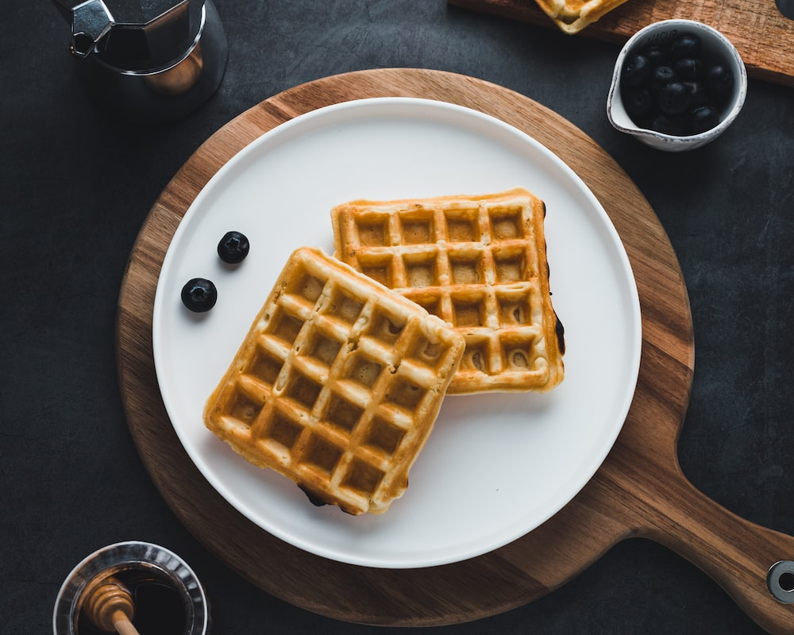

Receita

Waffle Clássico
Qual o país de origem do Waffle? Bélgica Na Idade Média, na região de Ducado de Brabante, atual Bélgica, um cozinheiro local utilizou a massa que era a matéria prima da hóstia para produzir com uma prensa de ferro o que viria a ser o Waffle
Ingredientes
Modo de Preparo
Informações Adicionais